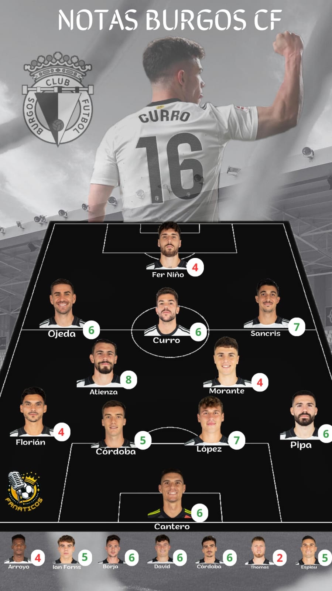

Ya que ha finalizado la primera vuelta de la liga Hypermotion, voy a valorar del 1-10 la actuación de nuestros jugadores hasta la fecha.
Espiau: 5
El futbolista canario sigue en la línea del año pasado. Es decir, las cosas a nivel futbolístico sobre todo de cara a gol no le salen demasiado bien. A pesar de ello, dentro del campo, lucha como el que más para revertir su situación.
A Edu se le pueden achacar muchas cosas, pero la actitud no es una de ellas.
Fer: 4
Por desgracia este año no estamos viendo a ese Fer goleador de la temporada pasada al cual, necesitamos y mucho por la falta de gol que tenemos. Se le ve lento, sin hambre, sin gol…
Sancris: 7
El madrileño ha ido de más a menos, comenzó la temporada volando siendo unos de los jugadores más determinantes me atrevería a decir de toda la categoría, poco a poco su forma fue bajando.
Aún no estando a su mejor nivel, Sancris ha sido uno de los jugadores más importantes del Burgos, ya que las pocas ocasiones que generábamos eran fruto de sus jugadas.
Iñigo Córdoba: 6
El canterano bilbaíno comenzó su etapa como blanquinegro mostrando un nivel muy bueno, pero a causa de las lesiones su rendimiento fue disminuyendo.
En mi opinión Iñigo, en un buen estado de forma, puede ser diferencial como ya lo fue a principio de temporada con su característico regate y profundidad.
Thomas: 2
Todos, cuando se anunció el fichaje, podíamos intuir que no iba a cuajar en el conjunto blanquinegro.
A la vista está que no es un jugador en absoluto a la altura ni del Burgos ni de la competición. Me da que esta incorporación se dio por motivos extradeportivos del presidente Figoli.
Curro Sánchez: 6
Está claro que Curro no está a su mejor nivel ni muchísimo menos.
Supuestamente por los galones que le ha dado el club, debería ser el líder incondicional del equipo, pero hasta la fecha no lo ha sido.
A pesar de no estar rindiendo al máximo, ha demostrado que con muy poco puede hacer maravillas lo cual significa que es un jugador especial y diferencial.
En muchos partidos gracias a sus pases de otra galaxia o a su acierto de cara a gol, ha decantado la balanza hacia nuestro lado.
El resumen de su primera vuelta es la intermitencia / irregularidad.
Don Curro Sánchez debe dar mucho más, porque está capacitado para ello.
Borja Sánchez: 6
El jugador asturiano no termina de encontrar su sitio en el Burgos.
Es un futbolista de una enorme calidad, pero le falla mucho la implicación en defensa ya que muy rara vez corre para atrás lo que le perjudica tanto a él como al equipo.
Ojeda: 6
El jugador más irregular del Burgos sin ningún tipo de duda. Te puede hacer un partidazo descomunal o puede firmar un partido bastante mediocre.
David González: 6
Al burgalés le han dado muy pocas oportunidades, lo cual me parece extraño porque calidad tiene de sobra.
Yo creo que puede aportar mucho al equipo sobre todo criterio y creatividad a las jugadas.
En los pocos minutos que ha disputado ha dejado detalles muy interesantes a valorar.
Atienza: 8
Atienza ha sido el jugador más importante del Burgos, firmando partidos brillantes demostrando el líder que es.
Es el ancla, el que sostiene al equipo en momentos clave, el que más lucha, el pilar del bloque defensivo...
Qué sería del Burgos sin Atienza...
Mario Cantero: 6
El canterano blanquinegro ha demostrado con sus actuaciones personalidad, lo cual parece haber gustado a Ramis que en estos últimos partidos le ha puesto de titular por delante de Morante.
El chaval tiene muy buena pinta, esperemos que siga así.
Morante: 4
El ex del Racing de Ferrol ha mostrado un nivel bastante pobre marcado por la imprecisión de sus pases. Yo no dudo ni de la calidad ni del jugador que es, pero tiene que espabilar muchísimo.
A Ramis no le tiembla el pulso, si tiene que poner a un chaval por delante de él lo pone como ya ha sucedido en los últimos encuentros.
David López: 7
El central mallorquín ha ido de menos a más. Sus primeros partidos como blanquinegro sembraron bastantes dudas.
Una vez que fue cogiendo confianza, su nivel fue mejorando muchísimo, hasta ser a día de hoy uno de los defensas más contundentes de la zaga burgalesa.
Aitor Córdoba: 5
A nuestro capitán le ha afectado mucho la salida de El Guezabal quien dirigía toda la zaga y hacía mil veces mejor a sus compañeros.
Córdoba ha tenido multitud de errores que nos han costado derrotas lo cual le ha retratado.
Últimamente ha firmado partidos buenos, parece que está recuperando la forma.
Arroyo: 4
Al igual que Aitor Córdoba, Arroyo ha quedado retratado en muchos partidos a causa de sus errores.
En un principio, el cafetero debía ser titular por delante de Pipa, pero como ya hemos visto Ramis parece confiar más en el canterano perico.
De aquí a final de temporada yo creo que dispondrá de más minutos. Hay que recordar que Arroyo es propiedad del club.
Pipa: 6
El catalán le ha comido la tostada a Arroyo y se ha hecho con el puesto del lateral derecho.
Siempre que juega lo hace de forma correcta sin cometer errores. No ha mostrado un nivel ni mucho menos espectacular, pero lo válido para mejorar a un cafetero muy bajo de forma.
Florian: 4
El francés no acaba de cuajar en el Burgos y no alcanza las expectativas de los aficionados.
Ni ha aportado consistencia defensiva ni la profundidad que se esperaba.
Florian es otro jugador que ha acumulado varios errores flagrantes que han repercutido al equipo a modo de derrotas.
Cantero: 6
El portero revelación de la pasada campaña no transmite la seguridad que se esperaba.
A pesar de que no está mostrando el nivel que todos esperábamos ha rendido a buen nivel realizando paradas de mérito.
Si lo comparamos con Caro, Cantero es la noche y Churripi el día a lo que el juego con los pies se refiere.